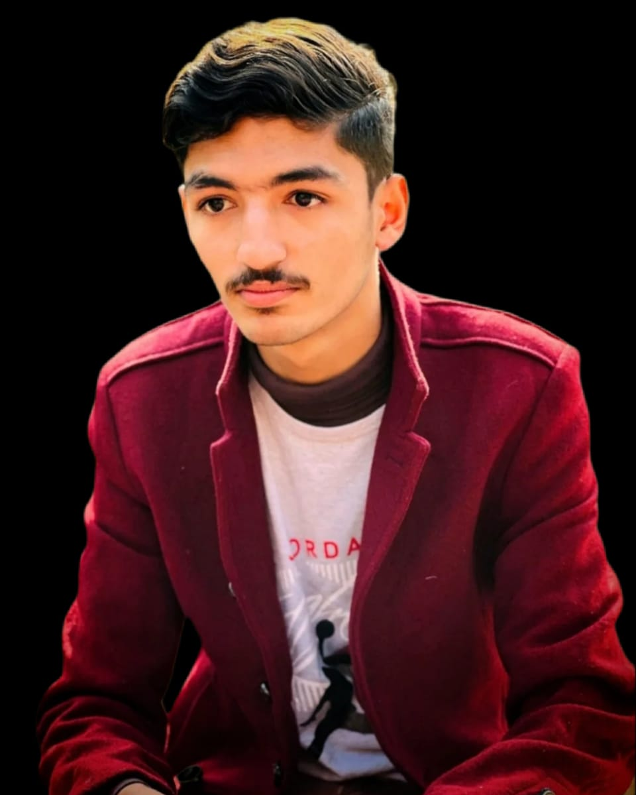

I'm Abdullah Iqbal, a B.S. Mathematics student with a strong interest in software development, applied AI, and data-driven problem solving.
I study at Bahauddin Zakariya University, Multan, Pakistan, where I combine analytical thinking with hands-on development skills. Alongside my studies, I independently design and build technical projects.
I have practical experience with Python, Flask, and web development. I recently completed a Branch Service Internship at Meezan Bank, where I managed account opening and worked with the bank's internal systems.
My projects include INFINITY-X, a self-learning AI chatbot with failover across multiple language model providers, HARNECT, a full-stack social media web app, StockWise, an inventory and expiry-alert platform with ML forecasting, and an interactive Simplex Solver for linear programming.